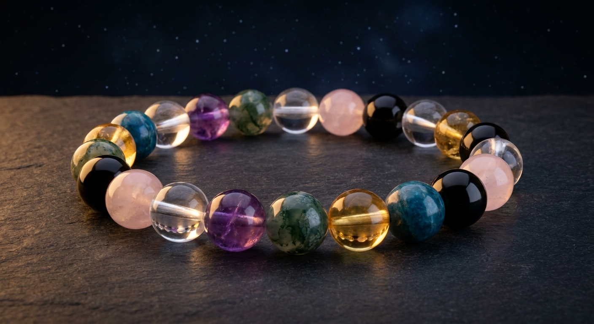
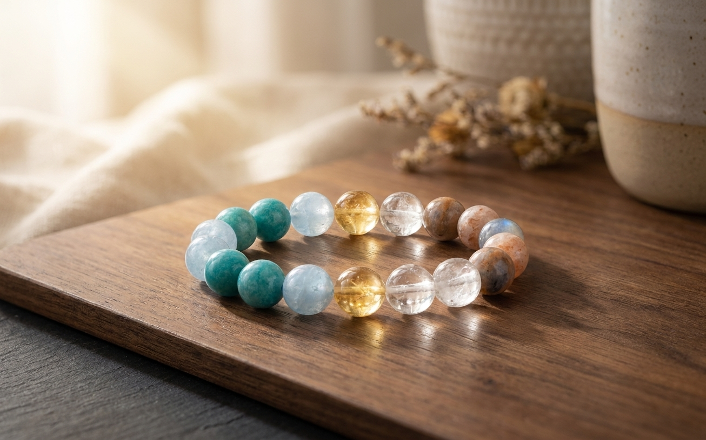
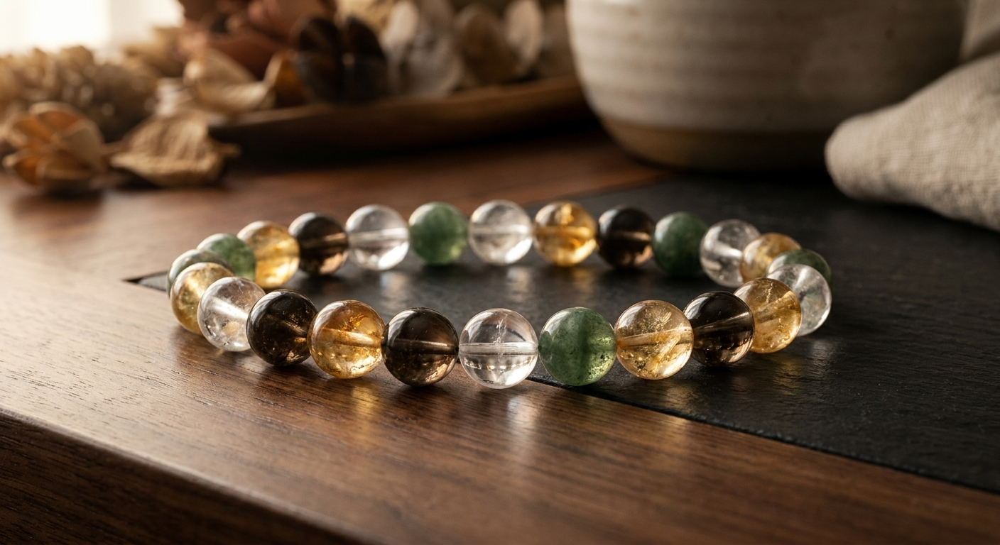
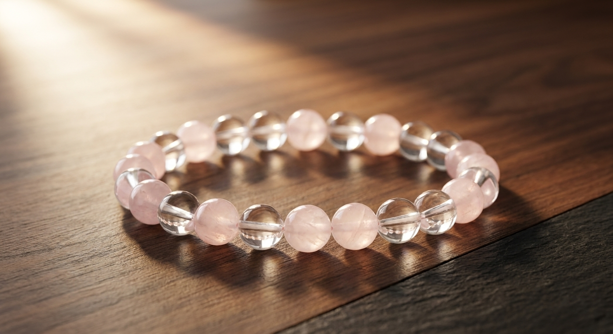
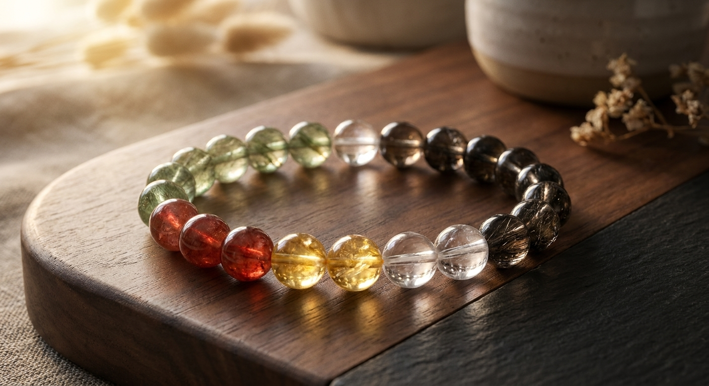
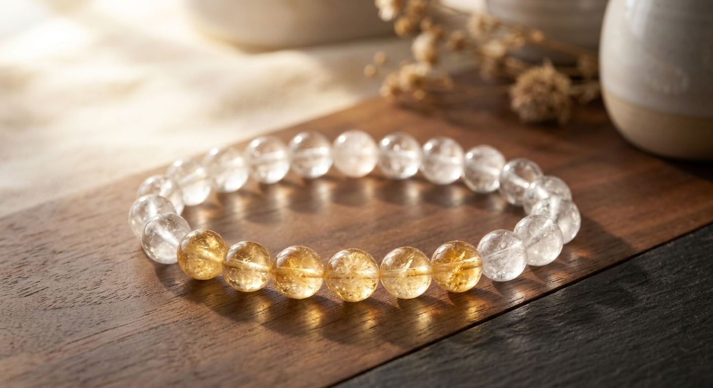

Anchorone mineral leads
Liftwarmth adds pull
Breathing roomclear beads let it breathe
6mm8mm10mm12mm16mm
You're not picking a product off a shelf. Name the moment you're in, set the wrist fit, and let each stone earn its place — one bracelet, built around you.
Real natural stone, matched and assembled. Tap any piece to see it up close.
Color, contrast, and spacing before symbolism.


01 Cool anchorClear quartz buffers blue and amber, so the contrast stays calm.
->
02 Dark pointDark anchors frame a clear field; one gold note keeps it alive.
->
03 Soft roseRose quartz repeats as stations inside a clear quartz field.
->Balance splits, five-color cycles, the golden ratio, moon phases, Norse and Hamsa guards — each design starts with an arrangement rule you can see, then the stones are tuned for colour and meaning.





Your birth moment can help narrow color, element, and placement. It is a guide layer, not a verdict. The bracelet stays editable.
A few simple qualities from your birth chart become a sorting lens for stones — a nudge toward colour and material, not a story that takes over the piece.
The stone still leads. The chart only helps explain why one mineral, color, or position may fit better than another.
A strand works when the stones, colors, bead size, and wrist fit agree. The system can suggest a direction, but every bead remains visible, editable, and explainable.
Pull the thread on "96 stones" and it keeps going down — every layer is the reason the one above it matters.
Not a shelf of five presets. Ninety-six different crystals — every colour, every character.
A $70 crystal can fit your life better than a $10,000 diamond — and a $50 strand truer to you than a $70 one. The right stone isn't the dearest in the room. It's the one that's actually yours.
Not "a calming bracelet." The exact amber for the raise you're about to ask for, the move across the country, the goodbye you're not ready for.
Your pattern, your moment, your wrist. The strand is assembled for your life, not pulled from a bin of five designs.
Most jewelry ends up in a drawer. This one you keep reaching for on the hard days — a small thing on your wrist that only you can read.
It was built from one moment — yours — so no two ever come out the same.
Build the one that's yours →A party needs a different kind of courage from a hard conversation. A new start needs a different stone from a goodbye. These are real strands people built for the moment they were in.
The preview uses the real stone — its actual colour, its real size in millimetres. No render trickery between the screen and your wrist.
Wrist size first. Bead count, spacing and fit are calculated for you, not guessed — so it sits the way it should.
Save a design, change one bead, share it, order it. The strand keeps its meaning while it becomes entirely your own.
Three things — wrist size, bead size, the moment you're in. Two minutes, and you see it on your wrist before you decide.